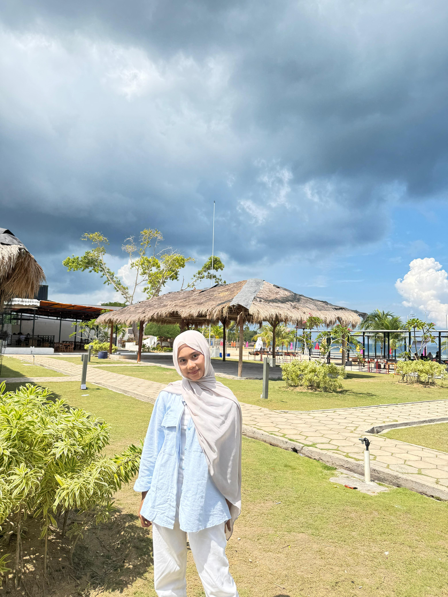
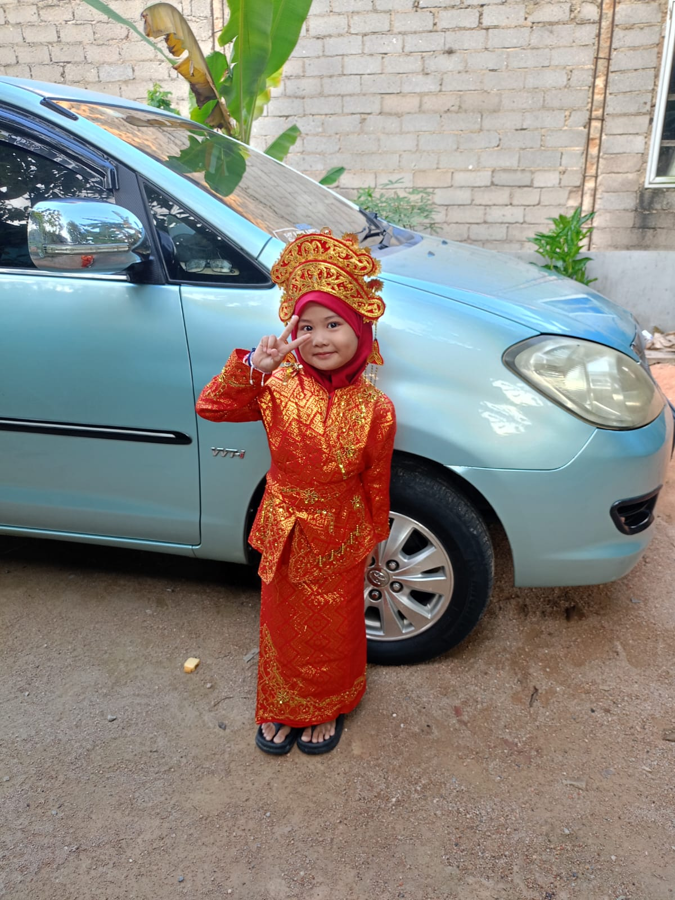
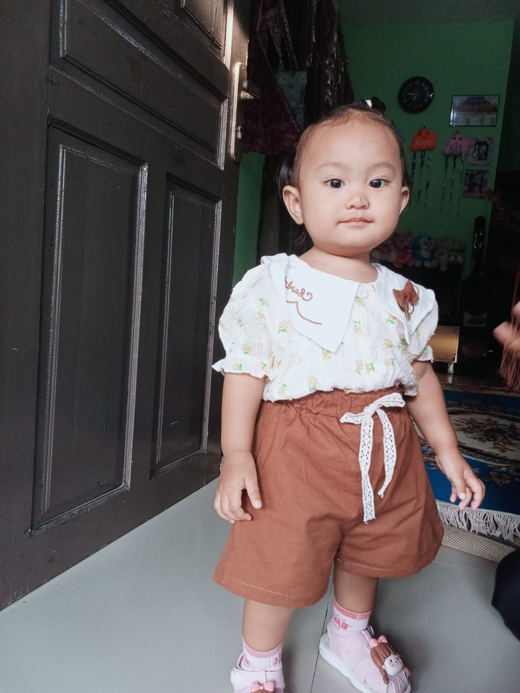

これはわたしのかぞくです。
Kore wa watashi no kazoku desu. – Ini adalah keluarga saya.




これはわたしのかぞくです。
Kore wa watashi no kazoku desu. – Ini adalah keluarga saya.
わたしのかぞくはろくにんです。
Watashi no kazoku wa rokunin desu. – Keluarga saya terdiri dari enam orang.
ちちとははtoわたしといもうとがさんにんです。
Chichi to haha to watashi to imouto ga sannin desu. – Anggota keluarga saya adalah ayah, ibu, saya, dan tiga adik perempuan.
わたしはよにんきょうだいです。
Watashi wa yonin kyoudai desu. – Saya empat bersaudara.
わたしはいちばんめです。
Watashi wa ichibanme desu. – Saya adalah anak pertama.
いもうとはさんにんいます。
Imouto wa sannin imasu. – Adapun adik perempuan, ada tiga orang.
わたしはいちばんうえです。
Watashi wa ichiban ue desu. – Saya adalah anak paling atas (sulung).
■ ちち
しろい ふく と ジーンズ を はいて、めがね を かけている ひと は ちち です。
Shiroi fuku to jiinzu wo haite, megane wo kaketeiru hito wa chichi desu.
→ Orang yang memakai baju putih, celana jeans, dan mengenakan kacamata adalah ayah saya.
とても はたらきもの です。
Totemo hatarakimono desu.
→ Beliau adalah orang yang sangat pekerja keras.
ちち と よく じょうだん を いいます。
Chichi to yoku joudan wo iimasu.
→ Saya sering bercanda bersama ayah.
■ はは
ちゃいろい ヒジャブ と あおい ふく を きて、ちゃいろい かばん を もっている ひと は はは です。
Chairoi hijabu to aoi fuku wo kite, chairoi kaban wo motteiru hito wa haha desu.
→ Orang yang memakai jilbab warna cokelat, baju biru, dan membawa tas warna cokelat adalah Mama saya.
とても やさしい です。
Totemo yasashii desu.
→ Beliau orang yang sangat baik hati.
はは と よく はなします。
Haha to yoku hanashimasu.
→ Saya sering bercerita bersama mama.
グレー の ヒジャブ と あおい ふく と しろい ズボン を はいている ひと は わたし です。
Guree no hijabu to aoi fuku to shiroi zubon wo haiteiru hito wa watashi desu.
→ Orang yang memakai jilbab abu-abu, baju biru, dan celana putih adalah saya.
くろい ヒジャブ と くろい ふく を きている ひと は いもうと です。
Kuroi hijabu to kuroi fuku wo kiteiru hito wa imouto desu.
→ Orang yang memakai jilbab hitam dan baju hitam adalah adik perempuan saya (yang pertama).
とても しんせつ です。
Totemo shinsetsu desu.
→ Beliau orang yang sangat ramah.
いもうと と よく かいもの します。
Imouto to yoku kaimono shimasu.
→ Saya sering berbelanja dengan dia.
あかい ヒジャブ と あかい ふく を きている ひと は いもうと です。
Akai hijabu to akai fuku wo kiteiru hito wa imouto desu.
→ Orang yang memakai jilbab merah dan baju merah adalah adik perempuan saya (yang kedua).
とても あかるい です。
Totemo akarui desu.
→ Beliau orang yang sangat ceria.
いもうと と よく べんきょう します。
Imouto to yoku benkyou shimasu.
→ Saya sering belajar dengan dia.
しろい ふく と ちゃいろい ズボン を はいている ひと は いもうと です。
Shiroi fuku to chairoi zubon wo haiteiru hito wa imouto desu.
→ Orang yang memakai baju putih dan celana cokelat adalah adik perempuan saya (yang ketiga).
とても おもしろくて かわいい です。
Totemo omoshirokute kawaii desu.
→ Beliau orang yang sangat lucu dan menggemaskan.
いもうと と よく あそびます。
Imouto to yoku asobimasu.
→ Saya sering bermain bersama dia.